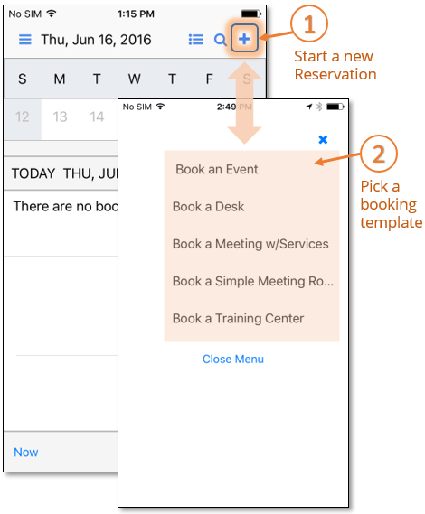
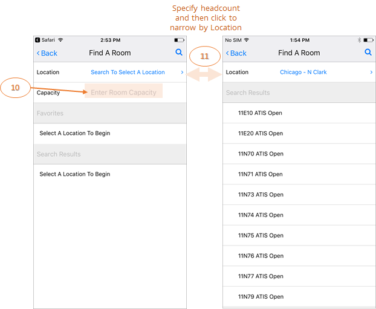

Create a Meeting
The EMS Mobile App allows users to quickly create bookings in unmanaged spaces (or spaces without services and approvals), from the convenience of their mobile device.
To create a booking in the EMS Mobile App:
- From the Calendar screen, tap the New Reservation (+) icon.
- From the Select A Template screen, choose a booking template.

- Enter the required information for your booking (Event Name, Event Type, Room, Group, and First Contact). Fields that appear here vary depending on your booking template.
-
During the booking process, search for a room by performing the following steps:
- On the New Reservation screen, click the Room field.
- On the Find a Room screen, search and filter your room criteria by:
- Location—the geographic or physical location of the space, such as a country, region, district, etc.
- Building—the building in which the space is located.
- View—the custom grouping your Administrator may have defined to pool and classify types of space, such as Offices, Conference Rooms, Classrooms, or Campuses.
- Area—the area of a Building or View in which the space resides, such as floor, plaza, hall, or project.
- Choose a Building.

- Enter the numeric Capacity (total number of attendees) for your meeting to narrow Location search results. Rooms meeting your criteria will appear in the Search Results.

- When you click to select a room for your meeting, you will be redirected to the booking page and the room you chose will now appear on your meeting.
- If the template allows, you may save and complete your reservation by clicking Save Changes. If the option is not available, continue to the next step.

- Click Additional Details to add billing and PO numbers and other information as required.

- When all required information is complete and valid, click Create Reservation to finalize your booking and return to the Home page, where your reservation will appear in the calendar.